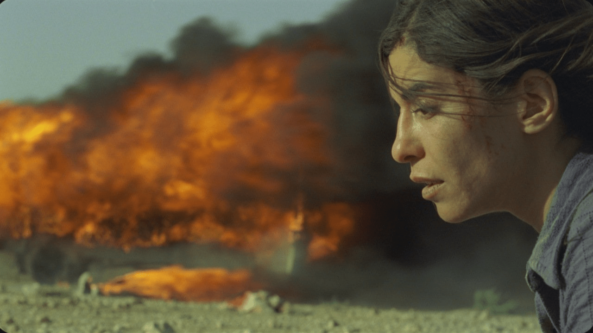
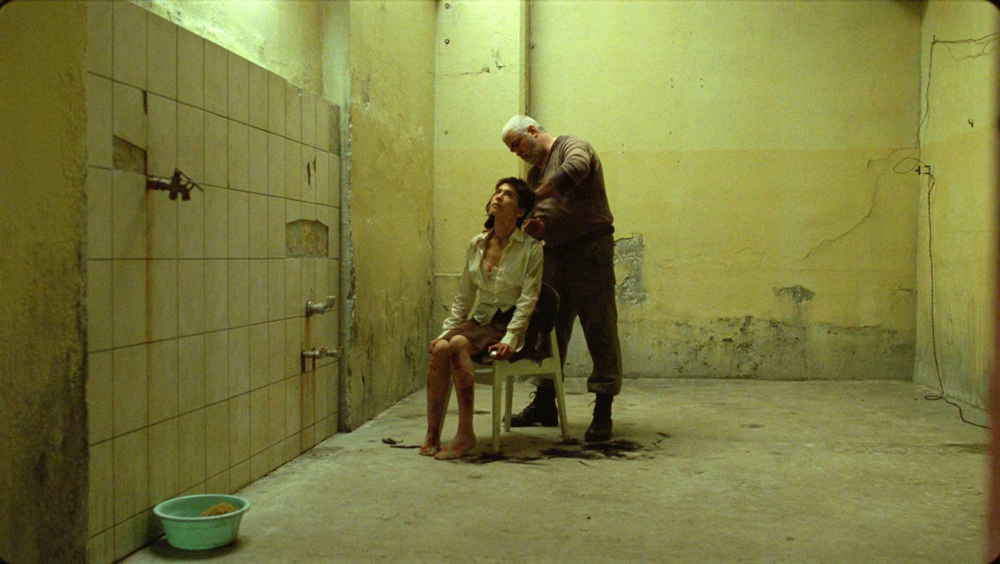
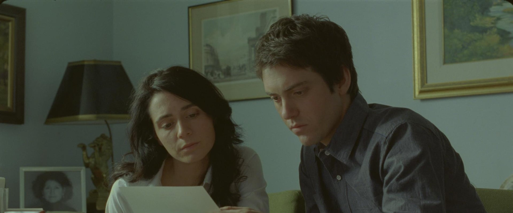
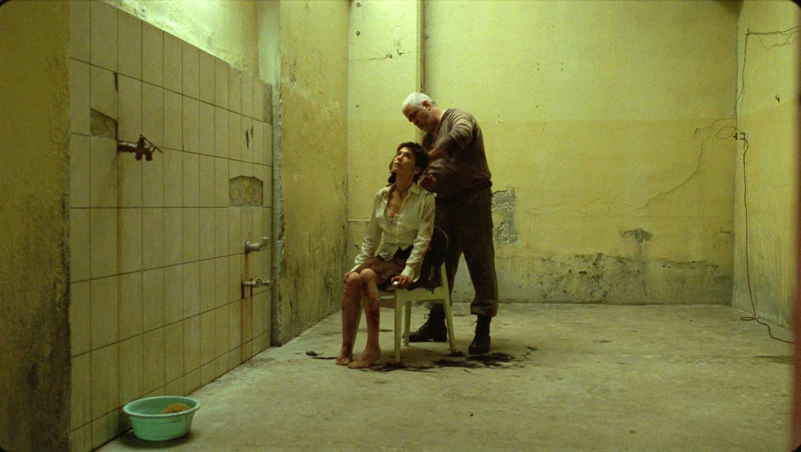
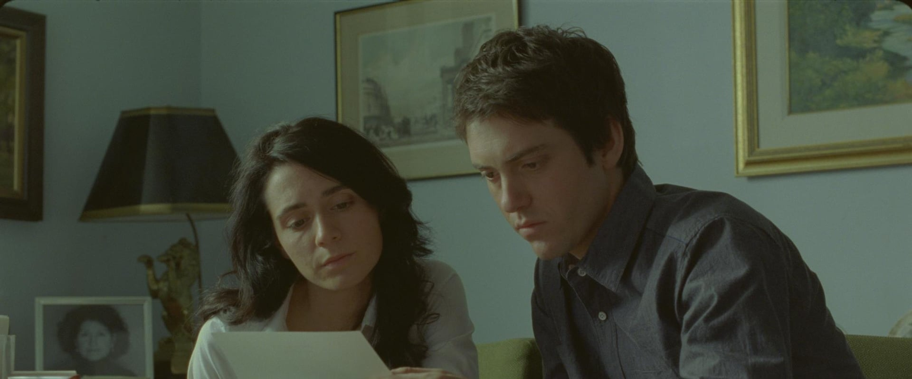

Lançado em 2010, o filme foi dirigirido por Denis Villeneuve, considerado uns do melhores diretores de sua geração, conhecido por Duna e Blade Runner 2049, entre outros.
O filme conta a historia de Nawal Marwan que deixa cartas para seus filhos gêmeos para serem lidas quando ela falecer. Jeanne deve entregar a dela para o pai que nunca conheceu e Simon deve entregar a dele para o irmão que nunca soube que tinha.
Apesar de morar em Montreal, Nawal na verdade é oriunda do oriente medio. Apesar de não citar o nome do pais e usar nomes ficticos para as cidades, entede-se que a historia se passa no libano durante a guerra civil já que o roteiro se baseia em uma historia real e o numero de semelhanças com o pais.
Durante a jornada dos filhos é mostrado trechos da historia de Narwal, assim mostrando sua historia não apenas pelos testemunhos mas monstrando o seu ponto de vista.
Roteiro: Denis Villeneuve, Valérie Beaugrand-Champagne, Wajdi Mouawad
Fotografia: André Turpin
Elenco: Lubna Azabal - Narwal
Mélissa Désormeaux-Poulin - Jeanne
Maxim Gaudette - Simon
 



nathan fordiani ©